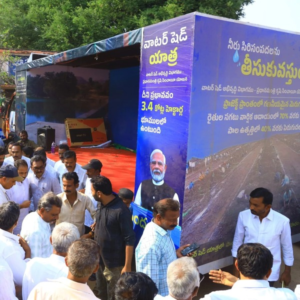
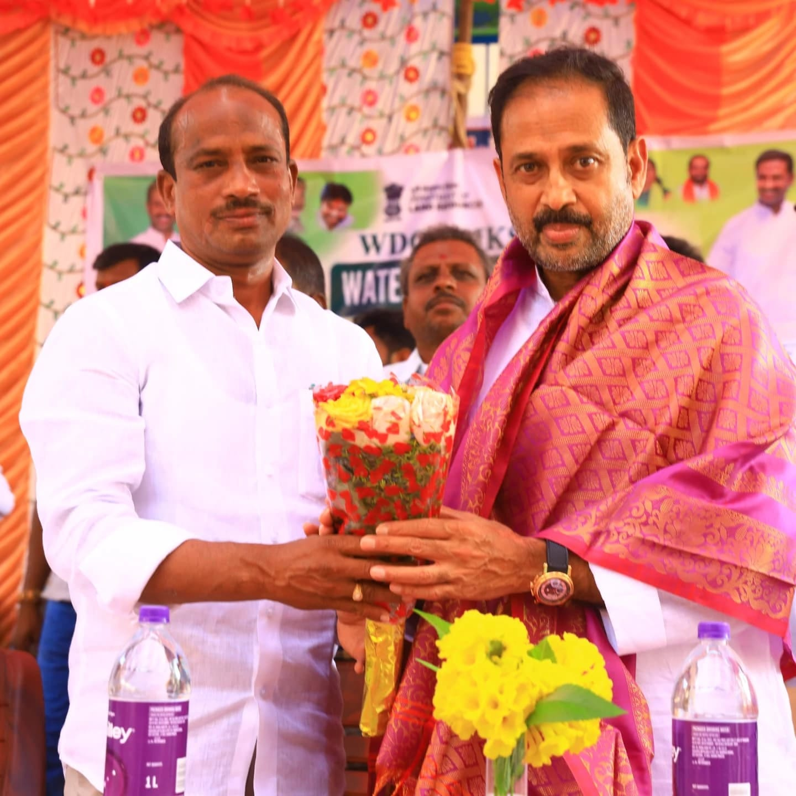

నంబుల పూలు, కుంట మండల కేంద్రం: నంబుల పూలు గ్రామంలోని జిల్లా పరిషత్ ఉన్నత పాఠశాలలో జరిగిన వాటర్ షెడ్ యాత్ర కార్యక్రమం ఘనంగా జరిగింది. ఈ కార్యక్రమంలో కదిరి నియోజకవర్గ శాసనసభ్యులు గౌరవనీయులు శ్రీ కందికుంట వెంకటప్రసాద్ గారు ముఖ్య అతిథిగా పాల్గొని, ప్రజలకు వాటర్ షెడ్ ప్రాధాన్యతను వివరించారు. ఆయన మాట్లాడుతూ, "వాటర్ షెడ్ అభివృద్ధి ద్వారా భూగర్భ జలాల సంరక్షణ, వ్యవసాయ అభివృద్ధి సాధ్యమవుతాయి. ప్రజలు ఈ ప్రాజెక్టుల ప్రయోజనాన్ని పూర్తిగా వినియోగించుకోవాలి," అని తెలిపారు.
కార్యక్రమంలో వాటర్ షెడ్ అధికారులు, విద్యార్థులు, కూటమి నాయకులు, కార్యకర్తలు పెద్ద సంఖ్యలో పాల్గొన్నారు. విద్యార్థులు ప్రత్యేక నృత్య ప్రదర్శనలు ఇచ్చి అందరినీ ఆకట్టుకున్నారు. నీటి సంరక్షణ, పర్యావరణ పరిరక్షణకు సంబంధించిన అవగాహన కార్యక్రమాలు నిర్వహించబడాయి. వీటిలో భాగంగా, నాటకాల ద్వారా నీటి వినియోగ పరిరక్షణ, వ్యర్థ నీటి పునర్వినియోగ ప్రాముఖ్యత, వర్షపు నీటిని దాచుకునే పద్ధతుల గురించి వివరించారు.
ఈ కార్యక్రమంలో పాల్గొన్న గ్రామ పెద్దలు, రైతులు, మహిళా సంఘాల సభ్యులు తమ అభిప్రాయాలను వ్యక్తం చేశారు. రైతులు మాట్లాడుతూ, నీటి నిల్వలు పెరగడం వలన వ్యవసాయం మెరుగుపడుతుందని అభిప్రాయపడ్డారు. గ్రామ మహిళలు, పిల్లలు కూడ దీనిపై ఆసక్తిగా స్పందించారు.
గౌరవనీయులు శ్రీ కందికుంట వెంకటప్రసాద్ గారు కార్యక్రమాన్ని విజయవంతం చేయడానికి సహకరించిన ప్రతి ఒక్కరికీ కృతజ్ఞతలు తెలియజేశారు. ఈ కార్యక్రమం గ్రామ ప్రజల్లో నీటి సంరక్షణపై అవగాహన పెంపొందించడంలో కీలక పాత్ర పోషించిందని అధికారులూ, స్థానిక నాయకులూ అభిప్రాయపడ్డారు. వాటర్ షెడ్ ప్రాజెక్టుల ప్రాముఖ్యత, వాటి నిర్వహణ, దీర్ఘకాలిక ప్రయోజనాల గురించి గ్రామస్తులకు మరింత అవగాహన కల్పించేందుకు ఇటువంటి కార్యక్రమాలు పునరావృతం కావాలని వారు కోరారు.
